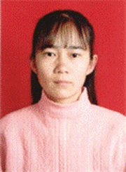

天道酬勤
我叫刘洪娟，是计算机系2000级的学生，我来自一个普通的农民家庭，父母都是勤劳善良的农民，但由于很多原因都没有念过书，这注定了我们贫穷的家境和落后的生活方式。父母从小就教育我和弟弟要好好学习，虽然我当时不是很明白这四个字的含义，但它却在我幼小的心灵中扎下了根。直到今天这四个字以及它所承载的父母无法用言语表达的期望一直都是我学习和生活的动力，也必将是我一生的动力。在这种动力的推动下，小学毕业我以全乡第一的成绩升入初中，后又以优异的成绩升入黑龙江省的一所省级重点高中，由于我学习成绩优异，工作表现突出，在即将高考之时光荣地加入了中国共产党，2000年7月我顺利通过了高考，并以优异的成绩考入了东北师范大学计
算机系。
“一个结果总意味着另一个新的开始”，当我接到沉甸甸的入学通知书的时候，我知道我要踏上一个新的开始了。我深知作为一名学生最重要的是学习，如果在大学中忽视了学习，也就失去了学生的意义，
于是在踏进校门的那一刻我就为自己将来的四年定下了这样的奋斗目标：学习上一定要强，工作上决不示弱，其它各方面均衡发展。现在我已经大学四年级了，我可以当之无愧地说我达到了我的目标，在过去三个学期的三次年终评优中，我连续三年荣获校内奖学金中最高的校长奖学金、02年还荣获“华为奖学金”，连续三年荣获校“优秀学生”称号，曾荣获“长春市文明大学生”称号、东北师范大学第九届“专业学习十佳”称号和“五四红旗团干部”等称号。有句谚语“世界上最短的距离是从手到嘴，最长的距离是从嘴到手”，今天我就把我如何走完这世界上最长的距离的经验与大家分享。我是学计算机专业的，我为自己在学习上确定的目标是：专业基础要好，动手能力要强，外语学习不能落下。
大一第一学期我们只开了《计算机基础》这一门专业基础课，有的同学说：“计算机系就学这些呀？做网页、编程才是我们计算机系应该学习的东西。”由于有这些想法，这些同学就不听老师讲课，自己去学习一些实用性的工具软件，但我认为基础知识是很重要的，“没学会走就想跑”是绝对不行的，因此我从大一开始就一直跟着老师的思路走，从基础学起，这样无论在软件还是硬件上我的基础知识都是很扎实的，以至于可以游刃有余地学习高年级的专业课。
我总是很认真地对待学习，认真解决学习中的每一个问题。每一节课我都提前做好预习，并在不懂的地方做上标记，如果你翻我学过的每一本课本，都会发现里面有许多这样的标记，课上我尽量记住老师讲的每一句话，并将我认为有价值的内容做好记录，课后再阅读一遍教材，仔细斟酌每一个知识点，然后将教材和课堂笔记结合起来再做一个课后笔记，我的这个笔记一直都是我们班级同学的模板，每本都会被复印多次作为复习资料，同学们都称我的笔记像打印稿。我的原则是当天讲的内容当天消化，决不欠“债”，实在没有时间也不能拖到下周。我还特别注重知识的融会贯通，每学到一个新知识点，我都想一下与之相关的旧知识，以便系统地理解所学的知识。当我学到C++语言的基本语法时，我就拿出PASCAL语言的笔记，“温故而知新”，对照一下两者有哪些相同点和不同点，在对比中学习这两种语言，不仅对PASCAL语言有了更深的理解，而且对学习C语言有很大的帮助，这样不但对每门课程有了系统的了解，同时对计算机知识这个大系统的理解也更深刻了。
在平时的学习中遇到一些问题是不可避免的，每当遇到不懂的问题时，我就把它记在一个笔记本上。对于课上的问题我就抓紧下课的时间问老师，一次不懂，我就问第二次，还不懂就问第三次，直到弄懂为止，几乎所有教过我的老师都被我这样问过。有一些概念性的问题我就去图书馆或上网查找，查到的就一一记在专门的笔记本上，假期有时间的时候就从前到后翻一翻。其余的一些问题我有时就请教其他的同学，以求在交流和讨论中相互学习、相互促进。
学习贵在坚持，持之以恒，一时的心血来潮是不行的。我的成绩的取得在很大程度上是靠我的这种韧劲。入学三年来，无论是刮风还是下雨，也无论是假期还是双休日，我都坚持着三年如一日地学习。2001年元旦那天我没有给自己放假，而是仍像平时一样背起书包来到了教室，教室里空无一人，当时已近寒冬，教室冷得就像冰窖似的，但我没有退缩，我咬咬牙，坐在了冰冷的凳子上，打开了书本。没过多长时间我就觉得浑身都冻透了，手和脚都冻得冰凉，真想能像其他同学一样在温暖的寝室里欢度节日，但想到还有好多专业课没有看，想到要为自己定下的目标而努力，我对自己说这点苦不算什么，挺一挺就过去了，我把大衣的拉锁往上拉了拉，继续学习了。
我学习的时候有个特点，就是周围不能有干扰我学习的声音，这样我才能完全投入到学习中去，所以虽然我们寝室只有四个人，但我一般不在寝室看书，而是去自习室。有一次我像往常一样来到了一个小教室上自习，当时那只有一个同学在学习，我坐在那没多久就像入境了似的忘记了周围的一切，就这样不知过了多久，当几位同学进来说要占用教室开会时，我才回过神来，一看表已经7点多了，不知不觉中我已经在这儿坐了将近4个小时，连吃晚饭都忘了。现在回过头来想，我的学习能不断进步就是在于对知识无限的渴求和这种忘我的精神。
计算机是一门操作性很强的学科，光有理论知识是远远不够的。我是一个农村的孩子，从小学到高中，我从未摸过计算机，连怎样开机和关机都不知道，更别说懂得怎样操作计算机了。为了提高自己的动手操作能力，只要机房开着，不论是不是我们班的上机时间，我都去上机。经过从练习打字和Windows基本操作到使用Office软件，我渐渐从对电脑一无所知转变为喜欢上了电脑，我意识到作为计算机系的学生没有电脑是不行的，于是我就用做家教和平时省吃俭用攒下的钱和同学合买了一台旧电脑，从那以后只要一有时间我就打开电脑，反复练习老师课上讲过的内容，并在其中寻求创新和发展，经过这些努力，我的计算机操作能力有了突飞猛进的提高。
动手能力来源于实践，并最终应用于实践。大一时我参加了分团委组织的为下岗职工进行计算机知识培训的活动，为他们介绍计算机基础知识，并帮助他们使用WORD软件制作个人简历，帮助他们提高再就业的机会，通过这项活动我的计算机操作能力有了很大的提高，同时也锻炼了我的社会实践能力。今年9月22日-24日我又参加了2003年全国数学建模比赛，在比赛中，我和同队的其他2名同学在已有的传染病模型的基础上建立了一个能够对SARS进行预测和提供方案的模型，并通过编制相应的程序得到了比较理想的结果，又在假设和模型基础上做出了最后的论文。虽然比赛结果还未知，但我相信我们一定会取得理想的成绩的。
我的英语基础不是特别好，但我相信“只要功夫深，铁杵磨成针”，我为自己制定了一个严格的四六级复习计划：每天做4篇阅读理解，听1小时听力，背50个单词。但计划起来容易，做起来就难了，专业课不能落下，工作也不能忽视，有时真的是没有时间每天按计划复习，只能挤时间，我就在别人睡午觉时听听力，怕打扰同寝室的同学休息，我就到走廊里去听，两节课之间的休息时间，我不是和同学聊天，而是拿着单词本到人少的地方背单词，晚自习结束后回到寝室，我还要再做一篇阅读理解，以完成我的复习计划。有时觉得这样真的很累，但想到我要完成我的复习计划，我安慰自己这叫充实不是累，我学习的劲头更足了，时间长了反而觉得学习带给了我无限的快乐，一会儿不学习就觉得像缺了点什么似的。这样我基本上每天都完成了学习计划，在四六级考试复习期间，我一共做了将近70套模拟考试题，背完了所有1-6级要求掌握的单词。具体复习时，我也有一套自己的方法：做模拟题时，我总是按照试题的顺序在一定时间内把试题做完，然后对照答案给自己打出一个分数，接着逐个题分析答案的解析，对于做对的题，要看一下我的思路与答案是否一样，做错的题就分析做错的原因，并把错题与错因整理在一个本上，在整个复习过程中，只这种记录本我就记了厚厚的3本。背单词时，我总是先从头到尾看一遍所有50个单词，然后再从头逐个背诵，这时我总是嘴里读着，心里想着，手上写着，我很重视其中的写，因为我相信“好记性不如烂笔头”这句话。一分耕耘，一分收获，我一次性通过了国家英语四、六级考试，并且大一和大二我的总成绩连续两年排名年级第一，其中所有专业课的成绩都是优秀，到目前为止的三年来专业课总排名也是第一。
学习是学生的天职，但学习决不是大学生活的全部，工作也是大学生活中不可缺少的部分。我在保证不耽误学习的情况下，入学以来一直担任系里主要的学生干部，先后担任2000级年级长，系分团委秘书长，系分团委副书记和系学生党支部组织委员，一直兼任2000级党小组组长和班级通讯员职务。
大一入学后不久，辅导员老师把年级长这个重任交给了我，但我没有把它当作压力，我相信只要我以认真的态度全身心地投入到工作中，一切为同学着想，我就一定会把工作做好的。年级长的工作十分繁重，班级的大小事情都要负责，于是我和另一位年级长每周都组织召开班级干部例会，商讨班级大小问题。班级同学申请助学贷款，我就连着几天帮同学们准备、整理和上交材料，直到合格为止。得知班级困难同学较多时，我就挨个寝室走，了解同学们的困难情况，如实上报辅导员老师，以保证及时为同学们解决困难。了解到班级男生和女生之间沟通太少的情况，我和其它班级干部组织男生和女生寝室成立联谊寝，并安排男生和女生坐同桌，过了一段时间后同学们之间的关系融洽多了，班级的凝聚力也增强了。就这样，为了同学们更好地学习和生活，我不知在辅导员老师和同学之间跑了多少次，经常午饭吃不好，午觉睡不成，有时熄灯后还要到走廊里研究工作计划，但只要是为了同学，再苦再忙我也觉得值得。
作为一名学生党员，我时刻以一个党员的标准严格要求自己，在同学中处处起模范带头作用，并时刻注意同学们思想上的变化，及时找他们谈话，帮助他们树立正确的人生观和价值观。同时我还想尽一切办法为同学们提供政治学习的机会，引导他们积极向党组织靠拢，这样不到半年时间，班级就有80%以上的同学主动上交了入党申请书。现我系2000级已有党员16名，积极分子也占总人数的80%。作为年级党小组组长，最主要的工作就是发展党员和预备党员转正，这一套程序很繁琐，但我一直坚持把每一次中的每一项工作都一丝不苟地完成好，有时一份材料我要修改几次才能合格，但能培养这么多优秀的同学加入到党组织中我感到莫大的欣慰。
有人说学习和工作不可兼得，而我却做到了学习和工作双丰收，我处理学习和工作之间关系的方法是，学习的时候只想着学习，工作的时候就全身心地投入到工作中。但冲突的情况总会出现，有时几项工作和学习课程会一起向我冲来，有时真的压得我喘不过气来，但我坚持下来了，而且在其中得到了许多的锻炼。去年我系分团委举办了“东北师范大学首届课件制作大赛”，大赛分为师大附中优秀教师报告会、大赛报名和决赛三个阶段。为了筹备活动，我上校团委跑了无数次，我和工作组的成员几乎是天天开会，商讨每一阶段的具体细节，只其活动方案和评分标准我也项项推敲、字字斟酌，先后修改了6遍才通过。而那学期我的专业课是最多的，也是最难的，我要保证在不耽误上课的基础上筹备好活动，有时马不停蹄地奔波了一天浑身酸痛，根本没有精神看书，我就在自习室的桌子上趴一会，再起来看书，即使开完会或做完工作是晚上9点，我也要再看半个小时的书才回寝室。我的付出得到了回报，那一学期不但分团委取得了可喜的成绩，我个人的学习也一点没有落下：校团委五四评优活动中我系分团委荣获“优秀团委”称号，并且五项单项奖中我系有四项获奖；我的学习成绩仍然保持年级第一。过去的三年我都是在这样的学习和工作相互矛盾，又相互促进中度过的，想到这是在磨练自己的意志，想到我是在把自己锻炼成为一个对社会有用的人，我不后悔昨天的付出，我更期待着明天的奉献。
我所取得的这些成绩与同学们的支持是分不开的，所以当同学们有困难时我会尽我的全力帮助他们，同学们有学习和生活上的问题也总是想到先来找我。
期末考试对每个同学来说都是至关重要的，期末这段时间我又是最忙的，既要做工作总结，又要进行紧张的期末复习，但为班级同学进行期末辅导对我来说是每学期期末的“必修课”。在这个过程中我可以发现一些新的问题，对我的学习也是一种促进。二年级下学期期末考试前，班委提出让我给同学们系统地讲一下操作系统中关于进程通信这部分内容，经过查找资料、与同学研究等充分的准备，我最后给同学们讲了将近两个小时，同学们感觉效果很好，可我的嗓子却喊哑了，后来又有几个同学找我给他们讲题，到最后我的嗓子都快说不出话来了，但我一句怨言也没有，因为为同学服务是我最大的快乐。
学校和系里组织的各项奉献活动我都积极参加，尽力献出我的一点微薄之力以帮助他人。在2002年献血活动中当我抢着冲向前去做完检查后，医生却说我的血管太细不能献血，我当时气极了，但想到为献血的同学做后勤服务同样是在做贡献，我就马上组织不献血的同学组成服务队照顾献血的同学，为他们买补品，每天买饭。在为献血同学捐款中，我在自身经济条件不是很好的情况下，毅然捐款100元，虽然这100元钱对我也很重要，但我想每天节省一点，克服一下困难，换来的是献血同学身体的尽快健康，换来的是他们的幸福和温暖。
三年级上学期我们年级有四个国家奖学金名额，奖金约为一万元左右，如果我报名，以我的成绩和家庭条件肯定能行，但想到班级有好几个家庭比我困难、成绩又不错的同学，我没有报名，把这个机会让给了别人。
在过去的三年中，我付出了很多，也收获了很多，学习成绩名列前茅，其它各方面全面发展，我得到的是系里老师的赞扬和肯定，班级同学的敬佩与信任，在去年学校组织的“我身边的优秀共产党员”征文活动中，年级中大多数同学写的是我，而且我已经被免试推荐到我校计算机系继续攻读硕士研究生。“路漫漫其修远兮，吾将上下而求索”，成绩属于过去，脚下的路还很长很长，是树木就要搏击风雨，是雄鹰就要展翅飞翔，带着那么多的关怀和期望，我会以更加向上的姿态迎接生命中一次又一次的磨练和考验，以更加饱满的热情投入到以后的学习和生活中去。“天道酬勤”我相信属于我的明天终会是阳光灿烂。
大一第一学期我们只开了《计算机基础》这一门专业基础课，有的同学说：“计算机系就学这些呀？做网页、编程才是我们计算机系应该学习的东西。”由于有这些想法，这些同学就不听老师讲课，自己去学习一些实用性的工具软件，但我认为基础知识是很重要的，“没学会走就想跑”是绝对不行的，因此我从大一开始就一直跟着老师的思路走，从基础学起，这样无论在软件还是硬件上我的基础知识都是很扎实的，以至于可以游刃有余地学习高年级的专业课。
我总是很认真地对待学习，认真解决学习中的每一个问题。每一节课我都提前做好预习，并在不懂的地方做上标记，如果你翻我学过的每一本课本，都会发现里面有许多这样的标记，课上我尽量记住老师讲的每一句话，并将我认为有价值的内容做好记录，课后再阅读一遍教材，仔细斟酌每一个知识点，然后将教材和课堂笔记结合起来再做一个课后笔记，我的这个笔记一直都是我们班级同学的模板，每本都会被复印多次作为复习资料，同学们都称我的笔记像打印稿。我的原则是当天讲的内容当天消化，决不欠“债”，实在没有时间也不能拖到下周。我还特别注重知识的融会贯通，每学到一个新知识点，我都想一下与之相关的旧知识，以便系统地理解所学的知识。当我学到C++语言的基本语法时，我就拿出PASCAL语言的笔记，“温故而知新”，对照一下两者有哪些相同点和不同点，在对比中学习这两种语言，不仅对PASCAL语言有了更深的理解，而且对学习C语言有很大的帮助，这样不但对每门课程有了系统的了解，同时对计算机知识这个大系统的理解也更深刻了。
在平时的学习中遇到一些问题是不可避免的，每当遇到不懂的问题时，我就把它记在一个笔记本上。对于课上的问题我就抓紧下课的时间问老师，一次不懂，我就问第二次，还不懂就问第三次，直到弄懂为止，几乎所有教过我的老师都被我这样问过。有一些概念性的问题我就去图书馆或上网查找，查到的就一一记在专门的笔记本上，假期有时间的时候就从前到后翻一翻。其余的一些问题我有时就请教其他的同学，以求在交流和讨论中相互学习、相互促进。
学习贵在坚持，持之以恒，一时的心血来潮是不行的。我的成绩的取得在很大程度上是靠我的这种韧劲。入学三年来，无论是刮风还是下雨，也无论是假期还是双休日，我都坚持着三年如一日地学习。2001年元旦那天我没有给自己放假，而是仍像平时一样背起书包来到了教室，教室里空无一人，当时已近寒冬，教室冷得就像冰窖似的，但我没有退缩，我咬咬牙，坐在了冰冷的凳子上，打开了书本。没过多长时间我就觉得浑身都冻透了，手和脚都冻得冰凉，真想能像其他同学一样在温暖的寝室里欢度节日，但想到还有好多专业课没有看，想到要为自己定下的目标而努力，我对自己说这点苦不算什么，挺一挺就过去了，我把大衣的拉锁往上拉了拉，继续学习了。
我学习的时候有个特点，就是周围不能有干扰我学习的声音，这样我才能完全投入到学习中去，所以虽然我们寝室只有四个人，但我一般不在寝室看书，而是去自习室。有一次我像往常一样来到了一个小教室上自习，当时那只有一个同学在学习，我坐在那没多久就像入境了似的忘记了周围的一切，就这样不知过了多久，当几位同学进来说要占用教室开会时，我才回过神来，一看表已经7点多了，不知不觉中我已经在这儿坐了将近4个小时，连吃晚饭都忘了。现在回过头来想，我的学习能不断进步就是在于对知识无限的渴求和这种忘我的精神。
计算机是一门操作性很强的学科，光有理论知识是远远不够的。我是一个农村的孩子，从小学到高中，我从未摸过计算机，连怎样开机和关机都不知道，更别说懂得怎样操作计算机了。为了提高自己的动手操作能力，只要机房开着，不论是不是我们班的上机时间，我都去上机。经过从练习打字和Windows基本操作到使用Office软件，我渐渐从对电脑一无所知转变为喜欢上了电脑，我意识到作为计算机系的学生没有电脑是不行的，于是我就用做家教和平时省吃俭用攒下的钱和同学合买了一台旧电脑，从那以后只要一有时间我就打开电脑，反复练习老师课上讲过的内容，并在其中寻求创新和发展，经过这些努力，我的计算机操作能力有了突飞猛进的提高。
动手能力来源于实践，并最终应用于实践。大一时我参加了分团委组织的为下岗职工进行计算机知识培训的活动，为他们介绍计算机基础知识，并帮助他们使用WORD软件制作个人简历，帮助他们提高再就业的机会，通过这项活动我的计算机操作能力有了很大的提高，同时也锻炼了我的社会实践能力。今年9月22日-24日我又参加了2003年全国数学建模比赛，在比赛中，我和同队的其他2名同学在已有的传染病模型的基础上建立了一个能够对SARS进行预测和提供方案的模型，并通过编制相应的程序得到了比较理想的结果，又在假设和模型基础上做出了最后的论文。虽然比赛结果还未知，但我相信我们一定会取得理想的成绩的。
我的英语基础不是特别好，但我相信“只要功夫深，铁杵磨成针”，我为自己制定了一个严格的四六级复习计划：每天做4篇阅读理解，听1小时听力，背50个单词。但计划起来容易，做起来就难了，专业课不能落下，工作也不能忽视，有时真的是没有时间每天按计划复习，只能挤时间，我就在别人睡午觉时听听力，怕打扰同寝室的同学休息，我就到走廊里去听，两节课之间的休息时间，我不是和同学聊天，而是拿着单词本到人少的地方背单词，晚自习结束后回到寝室，我还要再做一篇阅读理解，以完成我的复习计划。有时觉得这样真的很累，但想到我要完成我的复习计划，我安慰自己这叫充实不是累，我学习的劲头更足了，时间长了反而觉得学习带给了我无限的快乐，一会儿不学习就觉得像缺了点什么似的。这样我基本上每天都完成了学习计划，在四六级考试复习期间，我一共做了将近70套模拟考试题，背完了所有1-6级要求掌握的单词。具体复习时，我也有一套自己的方法：做模拟题时，我总是按照试题的顺序在一定时间内把试题做完，然后对照答案给自己打出一个分数，接着逐个题分析答案的解析，对于做对的题，要看一下我的思路与答案是否一样，做错的题就分析做错的原因，并把错题与错因整理在一个本上，在整个复习过程中，只这种记录本我就记了厚厚的3本。背单词时，我总是先从头到尾看一遍所有50个单词，然后再从头逐个背诵，这时我总是嘴里读着，心里想着，手上写着，我很重视其中的写，因为我相信“好记性不如烂笔头”这句话。一分耕耘，一分收获，我一次性通过了国家英语四、六级考试，并且大一和大二我的总成绩连续两年排名年级第一，其中所有专业课的成绩都是优秀，到目前为止的三年来专业课总排名也是第一。
学习是学生的天职，但学习决不是大学生活的全部，工作也是大学生活中不可缺少的部分。我在保证不耽误学习的情况下，入学以来一直担任系里主要的学生干部，先后担任2000级年级长，系分团委秘书长，系分团委副书记和系学生党支部组织委员，一直兼任2000级党小组组长和班级通讯员职务。
大一入学后不久，辅导员老师把年级长这个重任交给了我，但我没有把它当作压力，我相信只要我以认真的态度全身心地投入到工作中，一切为同学着想，我就一定会把工作做好的。年级长的工作十分繁重，班级的大小事情都要负责，于是我和另一位年级长每周都组织召开班级干部例会，商讨班级大小问题。班级同学申请助学贷款，我就连着几天帮同学们准备、整理和上交材料，直到合格为止。得知班级困难同学较多时，我就挨个寝室走，了解同学们的困难情况，如实上报辅导员老师，以保证及时为同学们解决困难。了解到班级男生和女生之间沟通太少的情况，我和其它班级干部组织男生和女生寝室成立联谊寝，并安排男生和女生坐同桌，过了一段时间后同学们之间的关系融洽多了，班级的凝聚力也增强了。就这样，为了同学们更好地学习和生活，我不知在辅导员老师和同学之间跑了多少次，经常午饭吃不好，午觉睡不成，有时熄灯后还要到走廊里研究工作计划，但只要是为了同学，再苦再忙我也觉得值得。
作为一名学生党员，我时刻以一个党员的标准严格要求自己，在同学中处处起模范带头作用，并时刻注意同学们思想上的变化，及时找他们谈话，帮助他们树立正确的人生观和价值观。同时我还想尽一切办法为同学们提供政治学习的机会，引导他们积极向党组织靠拢，这样不到半年时间，班级就有80%以上的同学主动上交了入党申请书。现我系2000级已有党员16名，积极分子也占总人数的80%。作为年级党小组组长，最主要的工作就是发展党员和预备党员转正，这一套程序很繁琐，但我一直坚持把每一次中的每一项工作都一丝不苟地完成好，有时一份材料我要修改几次才能合格，但能培养这么多优秀的同学加入到党组织中我感到莫大的欣慰。
有人说学习和工作不可兼得，而我却做到了学习和工作双丰收，我处理学习和工作之间关系的方法是，学习的时候只想着学习，工作的时候就全身心地投入到工作中。但冲突的情况总会出现，有时几项工作和学习课程会一起向我冲来，有时真的压得我喘不过气来，但我坚持下来了，而且在其中得到了许多的锻炼。去年我系分团委举办了“东北师范大学首届课件制作大赛”，大赛分为师大附中优秀教师报告会、大赛报名和决赛三个阶段。为了筹备活动，我上校团委跑了无数次，我和工作组的成员几乎是天天开会，商讨每一阶段的具体细节，只其活动方案和评分标准我也项项推敲、字字斟酌，先后修改了6遍才通过。而那学期我的专业课是最多的，也是最难的，我要保证在不耽误上课的基础上筹备好活动，有时马不停蹄地奔波了一天浑身酸痛，根本没有精神看书，我就在自习室的桌子上趴一会，再起来看书，即使开完会或做完工作是晚上9点，我也要再看半个小时的书才回寝室。我的付出得到了回报，那一学期不但分团委取得了可喜的成绩，我个人的学习也一点没有落下：校团委五四评优活动中我系分团委荣获“优秀团委”称号，并且五项单项奖中我系有四项获奖；我的学习成绩仍然保持年级第一。过去的三年我都是在这样的学习和工作相互矛盾，又相互促进中度过的，想到这是在磨练自己的意志，想到我是在把自己锻炼成为一个对社会有用的人，我不后悔昨天的付出，我更期待着明天的奉献。
我所取得的这些成绩与同学们的支持是分不开的，所以当同学们有困难时我会尽我的全力帮助他们，同学们有学习和生活上的问题也总是想到先来找我。
期末考试对每个同学来说都是至关重要的，期末这段时间我又是最忙的，既要做工作总结，又要进行紧张的期末复习，但为班级同学进行期末辅导对我来说是每学期期末的“必修课”。在这个过程中我可以发现一些新的问题，对我的学习也是一种促进。二年级下学期期末考试前，班委提出让我给同学们系统地讲一下操作系统中关于进程通信这部分内容，经过查找资料、与同学研究等充分的准备，我最后给同学们讲了将近两个小时，同学们感觉效果很好，可我的嗓子却喊哑了，后来又有几个同学找我给他们讲题，到最后我的嗓子都快说不出话来了，但我一句怨言也没有，因为为同学服务是我最大的快乐。
学校和系里组织的各项奉献活动我都积极参加，尽力献出我的一点微薄之力以帮助他人。在2002年献血活动中当我抢着冲向前去做完检查后，医生却说我的血管太细不能献血，我当时气极了，但想到为献血的同学做后勤服务同样是在做贡献，我就马上组织不献血的同学组成服务队照顾献血的同学，为他们买补品，每天买饭。在为献血同学捐款中，我在自身经济条件不是很好的情况下，毅然捐款100元，虽然这100元钱对我也很重要，但我想每天节省一点，克服一下困难，换来的是献血同学身体的尽快健康，换来的是他们的幸福和温暖。
三年级上学期我们年级有四个国家奖学金名额，奖金约为一万元左右，如果我报名，以我的成绩和家庭条件肯定能行，但想到班级有好几个家庭比我困难、成绩又不错的同学，我没有报名，把这个机会让给了别人。
在过去的三年中，我付出了很多，也收获了很多，学习成绩名列前茅，其它各方面全面发展，我得到的是系里老师的赞扬和肯定，班级同学的敬佩与信任，在去年学校组织的“我身边的优秀共产党员”征文活动中，年级中大多数同学写的是我，而且我已经被免试推荐到我校计算机系继续攻读硕士研究生。“路漫漫其修远兮，吾将上下而求索”，成绩属于过去，脚下的路还很长很长，是树木就要搏击风雨，是雄鹰就要展翅飞翔，带着那么多的关怀和期望，我会以更加向上的姿态迎接生命中一次又一次的磨练和考验，以更加饱满的热情投入到以后的学习和生活中去。“天道酬勤”我相信属于我的明天终会是阳光灿烂。